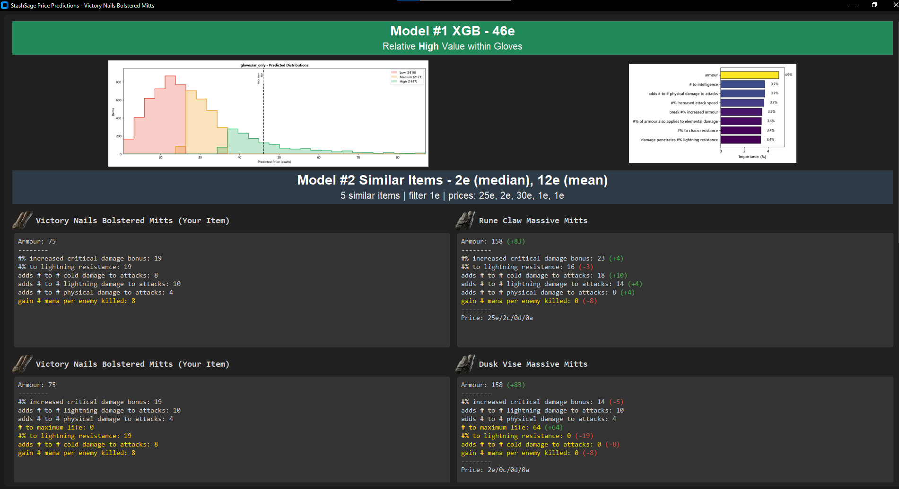

Desktop
Everything in one place: the prediction overlay, prediction history, StashScrape and StashWatch.
- Runs on
- Your Windows or Linux PC.
- Data stays
- On your PC.
- Needs
- The desktop app only.
v0.5.25 (10/15/2026)
Machine Learning by Budodude
Web Scraping by NocKtuRn4L
Free Path of Exile 2 price-check overlay. Machine-learning valuations for rare items, from live trade data.
Join our Discord to use the free API!
How to use ZIP: extract the whole ZIP to a folder, then run StashSage.exe from there. Keep StashSage.exe and the _internal folder together; create a shortcut if you want it on your desktop.
Requires approximately 2.4 GB of disk space on Windows.
Android (StashScrape and StashWatch on your phone): open the APK on an Android 8+ phone and allow your browser to install apps when asked. StashScrape prices locally with bundled models. Android setup.
The desktop and Android apps price items locally; no item or account data is sent to StashSage for pricing.

Does this sound like you?
There is no single "right" answer for an item's price. Demand changes with every league and patch, so yesterday's completed sales may not represent today's market.
The data we see is from items that haven't yet sold. Expensive listings linger while good deals disappear, so raw trade results are noisy and unreliable on their own. If anything, they may represent a price ceiling.
StashSage focuses on practical shortcuts instead of perfect accuracy. We look for tools that help you:
Price a single item, review past predictions, value your listed stash, or track listing changes over time. Choose your setup to use these tools on desktop, Android, or through a connected phone or agent.
Paste an item's copied description into Discord to get a price estimate and comparable listings. The bot uses the hosted pricing service; no desktop installation is required.
CTRL+C to copy the item's in-game description.The bot prices against multiple leagues — Forbidden Rites and Runes of Aldur. Every prediction reply shows which league answered, and you can switch with:
!league — check which league you're currently priced against.!league list — see every league currently installed.!league set <league> — save your preference, e.g. !league set forbidden-rites or !league set runes-of-aldur.Your choice is saved per Discord user and follows you across servers and DMs.
Want this in your own Discord server? Invite the StashSage bot — no setup on your end, just @mention it or paste an item in any channel.
Want the desktop or phone tools too? Choose your setup. For scripts, see the hosted pricing API.
Check an item while playing, compare it with similar listings, and filter modifiers to see how they influence its estimated value. Pricing runs locally on your desktop.
CTRL+1 (or custom hotkey) to bring up the (unfiltered) prediction overlay.CTRL+2 (or custom hotkey) to bring up the mod filters and filtered prediction overlay.Available in the desktop app. Set up StashSage on desktop.
Return to saved item descriptions, estimates and comparable listings from your earlier desktop price checks.
Screenshot uses example data.
Saved on your desktop. Set up StashSage on desktop.
Price your public premium and merchant listings in supported categories, then compare asking prices with model estimates. StashScrape reads the trade site's public listings; private stash tabs are outside its reach.
Setup and results screenshots use example data.
Available on desktop and Android. Desktop setup · Android setup.
StashWatch periodically checks the trade site for your public listings and keeps a local history of new listings, price changes, disappearances and items that appear again. Use its own StashWatch tab in the desktop sidebar to set up and review a watch.
A disappearance does not confirm a sale. An item may have sold, been delisted, or moved out of public visibility. StashWatch tracks listed prices and observations, rather than model valuations.
| Activity | What was observed |
|---|---|
| Listed | A listing appeared for the first time. |
| Price changed | The same listing had a different price amount or currency. |
| No longer observed | A previously seen listing was absent from a complete, comparable check. |
| Appeared again | A missing listing became visible again. |
Incomplete or capped checks retain unseen listings instead of recording disappearances. Check the last complete observation before drawing conclusions.
Changing the account, league, listing type or categories starts a fresh comparison baseline and preserves the earlier history. StashWatch observes public listings and their listed prices; it does not inspect private inventory or change your prices.
Saved desktop watches survive app restarts. Enabled watches resume when StashSage starts again. Checks run one at a time and respect trade-site rate limits; the next scheduled check follows the previous check's completion.
Screenshots use example data.
The redesigned desktop dashboard is planned for the next desktop release; the current v0.5.25 download uses the controls described above.
New watch creates a paused watch. Edit watch saves settings explicitly; choose checks every 15, 30, 60 or 120 minutes. An existing custom interval stays available until you choose a preset.
Listings shows Still listed? (Yes, No or Unknown), previous and last listed prices, changes and stash names. Incomplete checks leave unseen listings Unknown. Checks opens earlier snapshots; Activity shows price and visibility changes. Export CSV uses the selected check and filters.
A failed or cancelled attempt keeps the preceding captured result visible. No longer observed does not confirm a sale. Start watching repeats checks, Check now captures once, and Stop check cancels a manual check.
Use it on desktop or Android, or connect a phone or agent to your desktop. Choose your setup.
Four ways to run StashSage. Pick the one that matches your devices; each card says where the work runs and where your data stays.
Everything in one place: the prediction overlay, prediction history, StashScrape and StashWatch.
Price your stash with StashScrape and watch listings with StashWatch on your phone, no PC involved.
Check and control your desktop's StashWatch from a phone browser or the Android app while the PC does the work.
Let an agent, such as Muse, check listings, control watches and read watch activity from your desktop.
What syncs and what does not. A connected phone or agent uses the desktop's watches and history. Phone-run StashScrapes and independent phone watches stay on the phone; Tailscale does not automatically sync them. Export a phone StashScrape run to open it in the desktop viewer.
The Discord bot and the public API are separate hosted services. Neither needs the desktop app. The step-by-step guides below cover each setup.
StashSage.exe beside its _internal directory and launch it.Desktop use needs no Tailscale connection or desktop access token. Use the overlay guide, history guide, StashScrape guide or StashWatch guide for the workflow.
Install the Android APK for v0.5.25 on Android 8 or later. Allow installation from your browser when Android asks. No desktop, Tailscale or API key is needed; StashScrape prices locally with bundled models.
For independent monitoring, open StashWatch and choose This phone. Checks and history stay on Android; no model pack or desktop connection is needed for monitoring. Android can delay background checks, and force-stopping the app suspends them until you reopen it.
Independent phone watches do not merge with desktop watches. A listing that disappeared since an earlier scrape is no longer observed, rather than a confirmed sale. Install a newer APK to update the phone's bundled pricing models.
Use this connection for a phone browser, Android desktop mode, or an agent. Keep StashSage running and the PC awake; minimizing to the tray keeps desktop checks active while clients disconnect.
tailscale serve --bg --https=10000 http://127.0.0.1:5006:10000, for example https://your-pc.your-tailnet.ts.net:10000/. Desktop v0.5.25 and later also offer Copy phone link after setup. Transfer that link to your phone.Continue with the phone instructions or agent instructions.
Four setup choices and the shared connection controls live in Help → Setups. This preview uses example data; v0.5.25 downloads retain their existing StashWatch connection panel.
Open web page on this PC previews the page locally at http://127.0.0.1:5006/. Your phone uses the HTTPS Tailscale link, including :10000. Only change the local service port in Advanced settings if 5006 is unavailable, and use the new local port in the setup command.
The desktop access token is your private StashSage access password. It is separate from a Tailscale login key and a hosted pricing API key. Paste it into the connection's token field or secure settings; keep it out of URLs and public messages.
To stop monitoring, press Pause. To stop HTTP access, disable its option or exit StashSage. Remove this Tailscale proxy with tailscale serve --https=10000 off.
First complete the shared desktop connection setup. These clients control your desktop's StashWatch; the desktop owns its check schedule and history.
Connect Tailscale on your phone, open the HTTPS desktop link, paste the copied token into Desktop access token, and press Connect. The page lets you save and control watches, browse listings and activity, and download CSV. It keeps the token only in the open page's memory and forgets it when closed.
In StashWatch, choose Desktop via Tailscale, then Add desktop connection. Paste the HTTPS link into HTTPS desktop URL and the token into Desktop access token, then press Test and save. Import a desktop watch or save one with the native controls.
Android caches desktop watch history for offline viewing. When the phone disconnects, the awake desktop keeps monitoring. Independent This phone watches and phone-run StashScrapes stay separate; use run sharing to transfer saved StashScrape results.
The remote service returns observed listings and asking prices. Run StashScrape on desktop or Android for model valuations; the phone connection does not expose the desktop overlay or prediction history.
An agent such as Muse can use the desktop HTTP API if its tool runner can make authenticated requests from your Tailscale network. This is a general HTTP connection; StashSage does not supply a dedicated Muse integration.
Start StashSage on your desktop before connecting. The current API exposes listing snapshots and watch activity; full model-valued StashScrape runs and prediction history are not exposed to agents. Your agent provider handles any records you ask it to retrieve.
These calls go to your own desktop's HTTPS connection. Send Authorization: Bearer <token> or X-API-Key: <token> using its desktop access token.
GET /stash/catalog — list categories and known leagues.GET /stash/watches and POST /stash/watches — read or save watches.PATCH /stash/watches/{id} — edit settings while no check is running.POST /stash/watches/{id}/start, /pause or /check — control a watch. A manual check returns a job ID.GET /stash/runs/{id} — read a job's status.GET /stash/watches/{id}/listings — read last-known listings; append ?format=csv to download CSV.GET /stash/watches/{id}/events?after=0 — read chronological activity. Save the returned next_cursor and use it as the next after value to avoid logging events twice.For reliable integrations, send a stable X-Request-ID when requesting a check and reconcile its returned job ID. Use the watch's settings_version as If-Match when editing. Track event generation and head_cursor alongside next_cursor when caching desktop history.
Watches are created paused; start one or request a manual check after saving its settings. This local monitoring API is separate from the hosted item-pricing API, whose credentials and base URL are issued separately.
StashSage is a free desktop price-checking and trade utility for Path of Exile 2. It estimates rare-item value, shows comparable listings, highlights influential modifiers, and supports stash pricing workflows.
StashSage runs two models side by side. Model #1 is an XGBoost regressor — a tree-based model that weighs each modifier and how modifiers interact, learned from the modifiers and listed prices of every item in the dataset. Model #2 is a nearest-neighbor (KNN) comparison that reuses XGBoost's modifier weighting to find the most similar listed items and takes their mean and median price. Both learn from current, unsold listings, so estimates are practical starting points, not guaranteed sale prices — even a fairly priced item may not sell.
Model #1 (XGBoost) and Model #2 (KNN) take different approaches, so their numbers can diverge — treat them as two perspectives on the same item rather than one right answer. The Model #1 visualization also shows where an item's predicted value sits relative to other items in its category.
KNN's neighbors don't have to match perfectly — a partial overlap on mods and values can still be a useful comparison. Be careful pricing items with fewer than six modifiers against six-mod items: ask whether your four-mod item is really closer to another four-mod item with the same mods at very different values, or to a five-mod item that shares three exact mods and adds two you don't have.
The pricing models are designed for rare Path of Exile 2 items. Magic and unique items are not the intended prediction targets, and support varies by item category and available training data.
The desktop application performs its normal pricing operations locally. Android StashScrape also prices listings locally using bundled models and requires no API key. It fetches public listings from the Path of Exile trade site using your phone's connection. StashSage does not collect, store, or sell personal data; requests sent to third-party services are subject to those services' behavior and policies.
StashWatch saves settings and listing history on the device doing the checks: desktop, or Android in This phone mode. Connected clients access your desktop's records through the authenticated service you enable on your own computer. Android can cache that desktop history locally; an agent receives the records you request. See setup choices and data sharing.
Portable downloads are available for Windows and Linux. Windows users extract the complete ZIP and keep StashSage.exe beside its _internal directory. Android 8 or later supports standalone StashScrape and StashWatch. iPhone and iPad can use the connected StashWatch browser view while the desktop stays running.
The prediction overlay is optimized for Windowed Fullscreen. Other display modes may not render the overlay correctly.
New models are trained every few days and posted for download with StashSage releases. The version and build date at the top of this page identify the currently published application.
The same pricing engine behind the Discord bot is available as a small HTTP API for your own tools and scripts. Send it copied item text, get back a value estimate, comparable listings, and the modifiers driving the price — the same payload the desktop app renders.
This hosted service works without the desktop app and uses its own API key. To control your computer's watches and read its listing history, use the desktop API in the setup guides.
Ask in Discord and we'll issue you an API key and the base URL. Keys are per-consumer — one can be revoked without affecting anyone else.
Send your key on every request as an X-API-Key header, or as Authorization: Bearer <key>.
30 requests per 60 seconds per key (/predict and /predict-gui combined). Over the limit returns 429 with a retry_after_seconds field.
/predictJSON request body:
| Field | Type | Required | Notes |
|---|---|---|---|
item_text | string | Yes | The full copied item text, exactly as pasted from the game (CTRL+C while hovering it). |
league | string | No | Installed league ID or exact name (case-insensitive), e.g. forbidden-rites or runes-of-aldur — see GET /leagues for what's currently installed. Omitting it uses the server's configured default league. An explicit value that isn't installed is rejected rather than silently falling back — see errors. |
source | string | No | Free-form label for your own usage tracking; does not affect the response. Use a short, stable slug for your client (for example poe2-companion). |
channel_id | string | No | Discord channel id, if calling from a Discord context. |
guild_id | string | No | Discord server (guild) id, if applicable; omit for DMs. |
curl -X POST "$STASHSAGE_API_URL/predict" \
-H "X-API-Key: $STASHSAGE_API_KEY" \
-H "Content-Type: application/json" \
-d '{"item_text": "Item Class: Amulets\nRarity: Rare\n...", "league": "forbidden-rites", "source": "my-tool"}'200 OKTrimmed; real responses include full modifier and neighbor detail.
{
"request_id": "18a02c64be4a4b2f9927430956515957",
"release": {
"api_version": "0.5.15", "model_version": "0.5.15", "build_date": "2026-09-04",
"training_data_as_of": "2026-09-03T14:06:02+00:00",
"model_trained_at": "2026-09-03T14:32:16+00:00"
},
"league": { "id": "forbidden-rites", "label": "Forbidden Rites", "defaulted": false },
"currency_conversions": {
"divine_to_exalt": 394, "chaos_to_exalt": 40,
"display": "1d = 394e, 1c = 40e"
},
"xgb": {
"predictions": { "xgb": 3235.6 },
"bucket": "High", "bucket_low": 1576.0, "bucket_high": 47280.0
},
"target_item": {
"item_name": "Ghoul Touch",
"mods": [ { "pattern": "+# to maximum Life", "value": 45, "display": "+45 to maximum Life" } ]
},
"knn": {
"summary": { "count": 3, "median": 3100.0, "mean": 3180.5 },
"neighbors": [
{
"item_name": "Ghoul Wrap",
"price_exalts": 3100.0, "price_display": "3100e/78c/8d", "price_simple": "3100e",
"mods": [ { "pattern": "+# to maximum Life", "value": 42, "display": "+42 to maximum Life" } ]
}
]
}
}The example above is trimmed. These are the blocks every 200 response carries. Fields may be added over time, so ignore keys you don't recognise rather than treating them as errors.
| Field | Notes |
|---|---|
request_id | Opaque id for this call. Include it when reporting a problem. |
release.api_version | Version of the StashSage release serving the request. It tracks the overall release — today it mirrors model_version — and is not an independent response-contract version, so a bump does not by itself mean the schema changed. |
release.model_version | Version of the published model bundle the server has loaded. |
release.build_date | Date that release was built. This is the build date of the API and model bundle, not the cutoff of the market data behind the models — see model and data freshness. |
release.training_data_as_of | When the market data behind this prediction was assembled, ISO 8601 UTC. This is the freshness signal to display — see model and data freshness. null when the model that answered has no usable timestamp. |
release.model_trained_at | When that model was trained, ISO 8601 UTC. Usually minutes after training_data_as_of; the gap is training time, not data age. null when unknown. |
release.build_commit, release.git_sha | Optional build identifiers, present only when the running deployment has them. Handy when reporting a problem; don't depend on them. |
league | {"id", "label", "defaulted"} — the league this prediction was priced against. defaulted is true when the request omitted league and the server's configured default was used. See GET /leagues for the installed set. |
currency_conversions | The rates this response's display strings were rendered with: divine_to_exalt, chaos_to_exalt (each a whole number of exalts), and a preformatted display line. Read currency conversions before using them for anything but display. |
xgb.predictions.xgb | Model #1 point estimate, in exalts. |
xgb.bucket, xgb.bucket_low, xgb.bucket_high | Value band the estimate falls into, with band edges in exalts. bucket_high is null for the open-ended top band. |
target_item | The server's own parse of the item you submitted — name, matched modifier patterns with their values, and computed DPS for weapons. Worth checking when a prediction looks wrong: it shows exactly what the models saw. |
knn.summary | count of comparable listings found, plus the median and mean of their prices, in exalts. median and mean are omitted — not null — when no neighbor had a readable price, so count is the only key guaranteed to be present. |
knn.neighbors | The comparable listings themselves, nearest first (ascending distance from your item). See neighbor objects for the per-neighbor fields. |
xgb_visual | Presentation-shaped copy of the estimate for the desktop overlay and Discord embeds: the same prediction, a bucket label prefixed with a colour block, and color_square. Mirrored to the top level as xgb_bucket, xgb_color_hex, and xgb_color_square. Read xgb instead — these are display sugar and change with the UI. |
updates | Desktop-updater block, attached only when the deployment has an update manifest configured. Not part of the pricing contract; ignore it. |
/leaguesLists the installed leagues you can pass to /predict//predict-gui, and which one is the default. Same X-API-Key authentication as /predict; no request body.
{
"default_league": "forbidden-rites",
"leagues": [
{ "id": "forbidden-rites", "label": "Forbidden Rites" },
{ "id": "runes-of-aldur", "label": "Runes of Aldur" }
],
"release": { "api_version": "0.5.17", "model_version": "0.5.17", "build_date": "2026-09-13" }
}Only usable, fully-loaded leagues are listed — check here rather than hardcoding an id, since which leagues are installed (and which is default) can change between releases.
Each entry of knn.neighbors is one comparable listing. /predict and /predict-gui build neighbors with the same serializer, so these fields are identical on both endpoints.
| Field | Always present | Notes |
|---|---|---|
item_name | Yes | The listing's item name; an empty string when the source row carried no name. |
price_exalts | Yes | The listing's price in exalts, as a number. null when the row had no readable price. This is the field to compute on. |
price_display | Yes | The same price preformatted across all three currencies, "<exalt>e/<chaos>c/<divine>d" (for example 3100e/78c/8d), each rounded to a whole number using currency_conversions. null when the price is unreadable. |
price_simple | Yes | Short form in whichever currency the listing was posted in, e.g. 8d or 3100e. null when the price is unreadable. |
mods | Yes | The modifiers the neighbor was matched on: pattern (the normalized mod text, with # standing in for the value), value, and a rendered display. May be empty. Entries also carry a comparison against the same mod on your item when your item has it. |
base_type, icon_url, base_category | No | Present only when the item name resolves to a known base in the icon manifest. Absent — not null — otherwise, so test for the key. |
dps | No | Weapons only: the computed DPS figures for that neighbor. |
stash_name | No | Present only when the source listing carried one. |
Every price and estimate in the response is a plain number of exalts (Exalted Orbs): xgb.predictions.xgb, the bucket edges, knn.summary.median, knn.summary.mean, and neighbor prices alike. Listings posted in divine or chaos are converted to exalts before training and comparison, so exalts are the single canonical unit throughout — there is no per-field currency to inspect. Use currency_conversions to render a value in another currency.
The rates in currency_conversions come from the training-time sidecar of whichever league's model answered your request — they are not a live market feed, and they only move when that league is retrained and a new release ships. Because each installed league trains independently, the same item can convert at different rates in different leagues — always read currency_conversions from the response you got rather than caching a rate across leagues. They are exactly what every price_display and price_simple string in that same response was rendered with, which is why those strings are always internally consistent with each other. If you need a current divine or chaos price, take it from a live source and apply it to the exalt numbers yourself.
Listings are re-scraped and models retrained every few days, per category, and published with a StashSage release. Two timestamps in the release block describe the answer you just got:
training_data_as_of — when the feature matrix behind this prediction was assembled from scraped listings. This is the one to show users.model_trained_at — when the model itself was fitted on that matrix, normally minutes later.Both are per model, not per release: categories retrain independently, so an amulet and a bow answered by the same deployment can legitimately report different dates. Both are also upper bounds — scraping precedes the matrix build, so the newest listing in the training data is somewhat older than the stamp. Neither is an exact market cutoff, and neither should be presented as one.
Either can be null when the model that answered carries no usable timestamp; treat that as "unknown" and fall back to release.build_date, which remains a coarse upper bound on the age of everything in the release. The keys are always present, so null means unknown rather than unsupported.
Because api_version follows the release rather than the response contract, don't use it to gate on schema changes. Build your client to tolerate added fields, and ask in Discord if you want notice ahead of a contract change — the API is best-effort, but we would rather warn integrators than break them.
Every error response is {"error": {"code", "message", "details"}, "release": {...}}. details is omitted when there is nothing to add; on the codes below it carries request_id. /predict-gui shares /predict's league selection, authentication, and rate limits, so the same codes apply to both.
| Status | error.code | Meaning |
|---|---|---|
| 400 | bad_request | item_text is missing, empty, or could not be parsed as a valid item. |
| 400 | invalid_league | An explicit league value isn't installed, is retired, or is malformed — it never silently falls back to the default. Check GET /leagues for valid ids. |
| 401 | unauthorized | API key is missing, invalid, or revoked. |
| 404 | no_model | The item's category has no trained pricing model yet. |
| 429 | rate_limited | Too many requests for this key in the current window; see retry_after_seconds. |
| 500 | inference_failed | Prediction failed inside the model; include request_id when reporting it. |
| 500 | internal_error | Unhandled server-side failure. Carries no details, so quote the X-Request-Id header you sent when reporting it. |
| 503 | league_unavailable | league was omitted and the server has no valid default league configured (for example, multiple leagues installed with none chosen as default). Pass an explicit league from GET /leagues. |
By downloading or using StashSage, you agree to these terms. This software is provided "as is," without warranties of any kind. You are responsible for how you use the app and for compliance with the terms of any third-party services you access. We may update or discontinue features at any time. To the maximum extent permitted by law, we are not liable for indirect, incidental, or consequential damages arising from use of the app.
Contact: datawiseguysllc@gmail.com
The StashSage desktop app is designed for local operation. We do not collect, store, or sell personal data. Any data the desktop app processes (e.g., configuration, model inputs/outputs) stays on your device. If the app calls third-party APIs you authorize, the data is transmitted only as required to perform the requested operation and is not retained by us. Crash logs or analytics are not sent to our servers.
The StashSage Android app (StashScrape) searches the Path of Exile trade site for the public listings of the account you enter using your phone's connection. It prices those listings locally using models bundled with the APK; no listings are sent to StashSage for pricing and no API key is required. Your account name and saved runs stay on your phone. The app fetches live currency rates from poe2scout and poe.ninja and checks the StashSage server for app updates.
StashWatch stores watch settings, listing observations and activity history on the device performing checks: your desktop, or Android in This phone mode. Android desktop mode caches watch records on your phone for offline viewing. Independent phone records remain separate from desktop records; saved StashScrape runs can be exported and transferred explicitly. Its optional HTTP service is disabled by default and requires your private access token. If you enable phone or agent access, those clients can read and control your watches through your own connection. An agent provider's handling of information you share is governed by that provider's policies.
Trade listing data. StashSage collects public trade listings to train its pricing models. We do not publish, sell or share these listings as datasets. Seller account names, character names and whisper text are never stored. Any listing data prepared for use outside model training has trade item identifiers, listing notes and stash details removed, keeping only item attributes, modifiers and asking prices. If you believe a listing we hold can be tied to you, email us and we will remove it.
If this policy changes in the future, we will update this page and the app's release notes. For questions or requests, email datawiseguysllc@gmail.com.
Quick links: Terms of Service - Privacy Policy
Interested in learning more about other DataWiseGuys projects? Check them out below.
Want to brainstorm developing your own app with analytics or machine learning? Reach out to us.